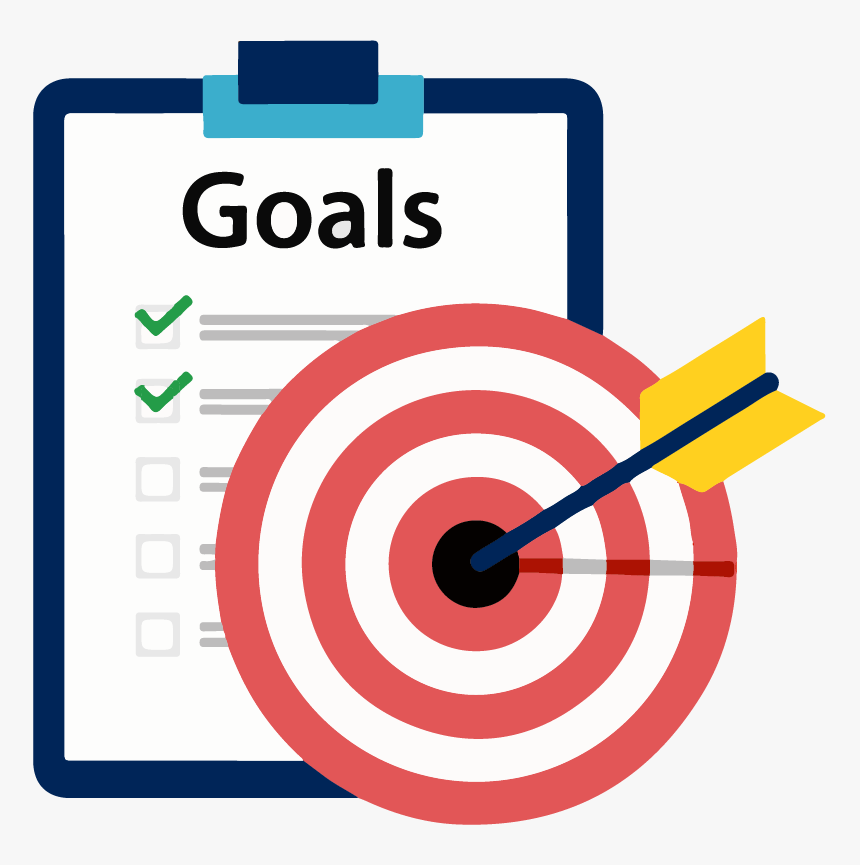

Social Media Marketing is advertising your product/service digitally with the help of social media platforms. It is one of the most used types of Digital Marketing. Social Media Marketing allows you to connect with your target audience aside from promoting your business to them.
As you pursue Social Media Marketing, there are six things you need to identify first before starting to work. You have to answer these questions to know what you truly want to achieve in your business. These questions will serve as a guide to your success in social media marketing.
- Who is your customer?
- This question determines the age bracket, gender, location, or college degree of your customers. The question sums up in describing your target audience for your business. You have to determine your customer to reach and spread the word about your business to the correct people.
- Where is your audience?

- Next is to determine where to find and reach your customers. You have to know which social media platforms your target audience are most active to easily engaged them in your business.
- What are your goals?
- Define what you want your business to achieve. You can either use social media marketing to establish your brand, reach a wider audience, generate traffic to your website, or grow the sales and revenue of your business. You have to identify if you only want to increase brand awareness or gain trust from your target audience. With this, you'll be able to focus on the things you need to accomplish instead of wasting your time and effort on something you don't need to do.
- What differentiates you?
- To make your business or brand on top of everyone, you have to be unique. The uniqueness your business has will catch more attention from people and engage them more. Think of something that makes your brand different from others and use it in your advertisements or pitch while marketing.
- When will you communicate?
- Consistency is the key role for your success in social media marketing. You have to consistently promote your brand and update your customers to inform them about your online presence. Aside from that, you have to determine when is the good time to post or advertise to reach a wider audience. Also, it will avoid you from being annoying to your customers because of posting repetitive advertisements.

- How will you execute?
- This talks about the tools you'll be using while marketing. You have to know all the marketing tools you'll be using and maximize their capabilities. Use analytical tools to improve your marketing strategies and execute them well.
These guide questions will improve your performance in Social Media Marketing. It will help your business reach a wider audience, create effective advertisements, and have a deep understanding of your audience With these questions, you'll be able to state clearly your goals and the things you want your business to achieve.